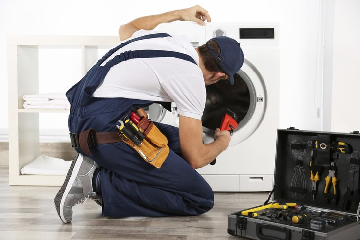
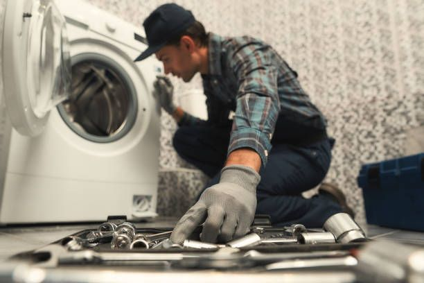
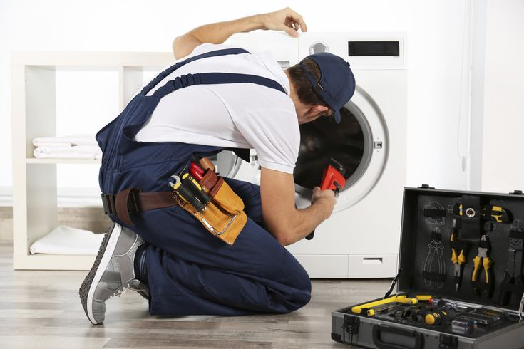
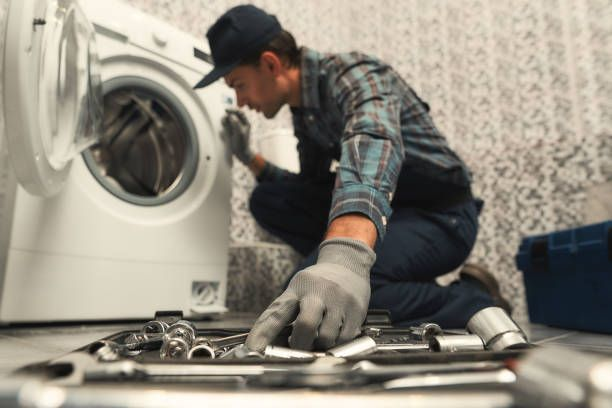

Washing Machine Repair Training Services
At OZZO, we offer professional washing machine repair training designed to create skilled technicians capable of servicing all types of washing machines. Our comprehensive program combines theoretical knowledge with extensive hands-on practice, preparing you for a successful career in appliance repair.
 



Types of Washing Machines We Cover
Our training program covers the complete range of washing machines available in the market today.
We provide in-depth knowledge and practical skills for both traditional and modern washing
systems.
We train on fully automatic front-load and top-load machines, semi-automatic twin-tub washing machines, commercial industrial washers, portable compact washers, and all major brands including LG, Samsung, Whirlpool, IFB, Bosch, and Haier. Our curriculum includes different technologies like inverter motors, direct drive systems, steam wash, and smart washing features.
From basic semi-automatic machines to advanced fully automatic smart washers, our training prepares you to diagnose and repair any washing machine model efficiently.
Practical Hands-On Workshop Training
Experience real-world repair scenarios with our 90% practical training approach. Each student works on actual faulty washing machines, learning disassembly, component testing, troubleshooting, and reassembly under expert supervision in our fully equipped workshop.
Professional Tools & Diagnostic Equipment
We train you with industry-standard tools including multimeters, clamp meters, insulation testers, water pressure gauges, motor testers, electronic circuit testers, specialized spanner sets, and diagnostic software for smart washing machines.
Expert Training by Industry Professionals
Learn from certified washing machine repair specialists with 10+ years of field experience. Our trainers provide not only technical knowledge but also practical insights into customer service, spare parts management, and business strategies for appliance repair services.
Mechanical & Electrical System Training
Our comprehensive training covers both mechanical components (drum, agitator, gearbox, pulleys, belts, bearings) and electrical systems (motors, PCBs, sensors, timers, control panels, water inlet valves, drain pumps, and heating elements). We teach systematic troubleshooting for integrated systems.
Business Setup & Support
OZZO provides complete business guidance for starting your own washing machine repair service. We cover workshop setup, tool procurement strategy, spare parts sourcing networks, service pricing models, customer acquisition techniques, and warranty service management to ensure your business success.
Join OZZO Washing Machine Repair Training and master the essential skills for a rewarding career in appliance repair. With the growing demand for home appliance services, our training equips you with both technical expertise and business knowledge. Enroll now to become a certified washing machine repair specialist and start your own profitable service business!